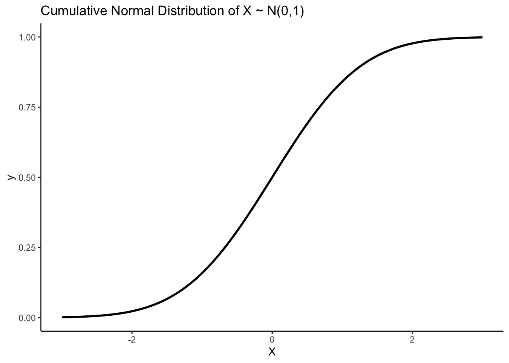

library(tidyverse)
# ggplot2에서 주요 확률분포 곡선을 그릴 때는 stat_function을 활용하면 됩니다
# 정규분포(norm)의 누적분포함수를 그릴 땐 fun = pnorm 조건을 쓰세요
# 마찬가지로 지수분포(exp)에서 누적분포함수를 그릴 땐 fun = pexp 조건을 쓰면 됩니다.
ggplot(data.frame(X = c(-3, 3)), aes(x = X)) +
stat_function(fun = pnorm, colour = "black", size = 1) +
ggtitle("Cumulative Normal Distribution of X ~ N(0,1)") +
theme_classic()
# 참고로 접두사 p는 누적분포함수(CDF)를 의미하고,
# 접두사 q는 누적분포함수(CDF)의 역함수인 분위수함수를,
# 접두사 r은 무작위 난수 샘플을 의미합니다